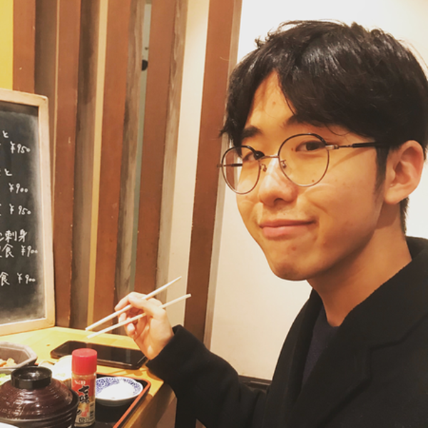

吉開拓人といいます。中学からプログラミングを始めて、現在大学生をしながらフリーランスのソフトウェアクリエイターとして働いています。主にWebサービスや、スマホアプリなんかを作ってますね
学生をやりながら働いてるんだ。いろいろ聞きたいところだけど、まずは、どんなものをつくってるか詳しく教えて
高校生の頃は、Gateboxというロボットを作る会社で働いていました。アニメのキャラクターと一緒に生活できるホログラムロボットです。好きなアニメキャラと声で会話したり、スマホでチャットしたりできます。
高校生の頃からがっつりやってるね。。最近はどんな仕事を？
最近は、お仕事でビットコインを使った決済プログラムを作ってます。最近流行りの仮想通貨を使って、誰でも自分が作ったプログラムを売れるような仕組みを作っています。あと趣味で僕のポートフォリオサイトとか、このプロフィールサイトを作ったりしてますね。
簡単な仕事では無さそうだけど、たくとくんは大学生もやってるんだよね。なんだか只者じゃない感じがするけど、仕事と学生の両立はどうバランスをとってるの？
確かに大学と両立するのは厳しいですね。なので、仕事は週２日ぐらいにとどめておいて、勉強時間の合間にやっています。
うまく両立してるんだね。ところで、たくとくんの大学について聞いても良いですか？
僕は今慶應義塾大学の総合政策学部に所属しています。SFCと呼ばれるキャンパスで、いろんな専門分野を持つ人たちが集まるところです。日々優秀な仲間から刺激を貰っています。
ゼミは村井研という所に入っていて、インターネットを社会にどう役立てるかを研究しています。サークルは今は入ってません。
インターネットは充分役立っていそうだけど、さらに役立てたいってこと？
そうです。今でも貧困や情報格差などの社会問題はありますから、その果てしない問題を、インターネットを使って解決できないか、ということですね。
なるほどね。そういうところでたくとくんのプログラミングを通しての経験が活かされてたりするの？
結構活かされてる部分は多いんですけど、論文を結構読むのが大変で、プログラミング以外の所が結構難しいです。
プログラミングの話しを聞くと最強のイメージを持つけど、そういうところがあって安心した(笑) 話しは少し変わるけど、たくとくんはプログラミング以外で趣味とかはあるの？
趣味ですか、休みの日には行きつけのカフェに行ったり、あとコーヒーを家でドリップして飲んだりしてますね。コーヒーが好きです！
コーヒー好きでカフェに行く人はよくいるけど、家でコーヒーを淹れるのはなかなかのこだわりですね。
そうなんです！最近友達からコーヒーの器具をプレゼントしてもらって、それがきっかけでハマっちゃいました。最近では結構美味しく淹れられるようになったんですよ！
えー素敵なプレゼント。。自宅での淹れ方とかちょっとしたこだわりとかあればぜひ教えて。
僕は最初蒸らしの段階で一回でお湯をある程度淹れて、30秒ぐらい待ってから、残りのお湯を注いでたんですけど、蒸らしの時のガスの抜け方を見ながら、臨機応変にお湯を淹れるようにしたら、結構美味しくなりました。
すごいこだわってる。でも、何かにこだわりをもって向き合ったり、突き詰めたりするのはいいことだよね。普段の生活で何かちょっとしたこだわりを持ってる事とかある？コーヒー以外で
こだわりかー。クリエイティブな作業をするための、設備とかはこだわっています。家には49インチの横長のディスプレイと、自分ではんだ付けして作ったキーボードがあります。仕事のパフォーマンスにも大きく関わってくるので、そこには結構多額のお金を投資しています。
ありがとう！かなり綺麗に整えられてるね。システムも作れるしキーボードも作れちゃうのか。そういうのは全て独学？
独学です！プログラミングも電子工作も、全部遊びの一貫として勉強しています。そのスタンスのほうが上達するんですよ。
前までそうだったんですけど、嫌いな勉強も気楽に趣味として挑戦してみたりすると意外と好きになったりするって気づいたんですよね。
へー！なるほど！勉強への心持ちが変わってきたんだ。そういうところでいくと、最近はプログラミング以外で何か勉強していることはある？
前まで苦手だったんですけど、最近数学の本をたくさん買うようになりました。でも問題をたくさん解くわけじゃなくて、数学の世界をミステリー小説みたいな気持ちで読むのが好きなんです。
数学の世界をミステリー小説みたいに、、、そんな風に読めたら本当に楽しそう。ちなみに、それはどんな本？？、、
最近よく読んでるのはオイラーの贈物という本ですね。オイラーが数学者の中で一番好きなんですよ。
世界で一番美しい数式を発見したと言われています。オイラーの等式というんですけど、それが好きなんですよね。
たくとくんはプログラミングや勉強が得意だということがわかったんだけど、他には何か得意なこととかある？
あとは、掃除ですね。前まで散らかり放題の部屋だったんですけど、最近掃除のコツを覚えて、それ以来自分の部屋で仕事できるぐらいキレイになりました。
たしかにすごく綺麗なデスクだったもんね。ここまでいくと完璧な印象があるんだけど、逆に不得意な事とかはある？
苦手なこと、筋トレとかはあまり続かないですね。ウォーキングは毎日続けてるので運動不足ではないんですけど、中々身体が大きくなりませんね。
あ、よかった。これでムキムキでスポーツ万能とかだとちょっと怖いもん。でも、運動が嫌いとかではないから健康的でいいね。とても。
落ち着いていて、ポジティブでよく笑う人が好きですね
外見にはあまり多くを求めない感じだね。髪が綺麗っていうのも意外と内面を表している気もする。
じゃあ、もし彼女ができたらどんな付き合い方をしたい？
お互いの意思を尊重できるような良い関係性を築きたいです。いろんな場所に遊びに行ったり、何もしてなくても、無言でも、一緒に居て楽な関係になりたいです。
いいよね。本当に、お互いの事を尊重するの大事！何かあってもちゃんと自分の言葉で話し合えたりね！
ここまで趣味から仕事、私生活や恋愛観について聞いてきたけど、たくとくんはまだ意外にも若干22歳だよね。これからの人生まだまだだけど、今後の展望とかあれば聞かせて！
そうですね、まず自分の実力はこれまで通り高めていこうと思います。優れたプログラマーは魔法使いって呼ばれることがあるので、魔法を使っているような、すごい事ができるクリエイターになりたいです。
あとは、周りの人を大切にして、ラッキーを逃さないようにしたいです。僕の名前は吉開拓人、吉を開拓する人と書くので、その名の通りに生きていけたらと思います。
すごいことができるようになったたくとくんは本当にたくさんの人を幸せにしてくれそうだね。。今後のたくと氏に期待してる！ありがとうございました！